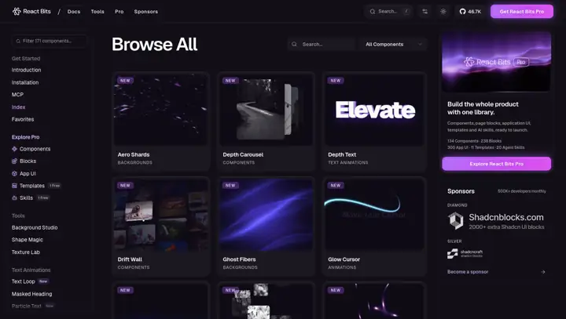
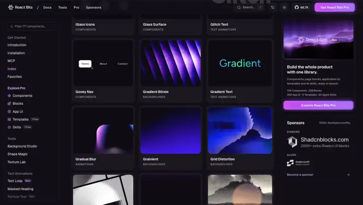
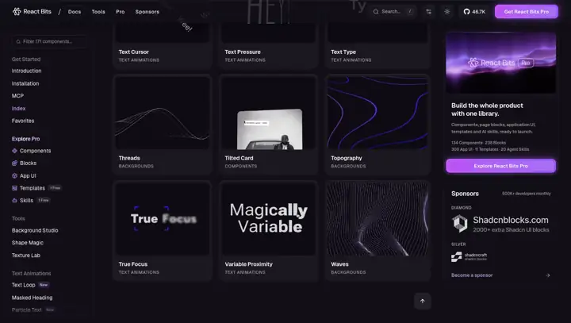
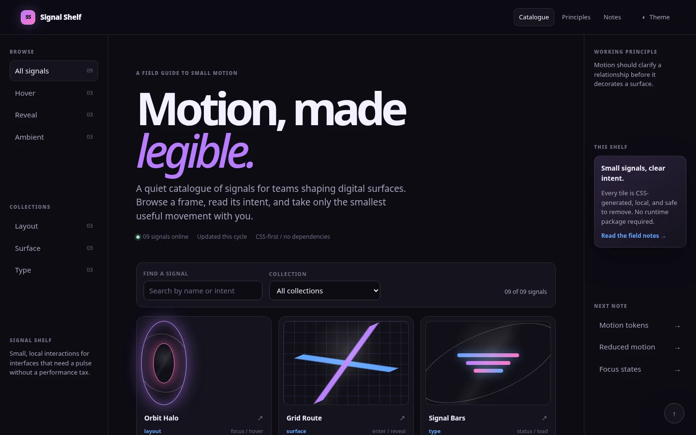
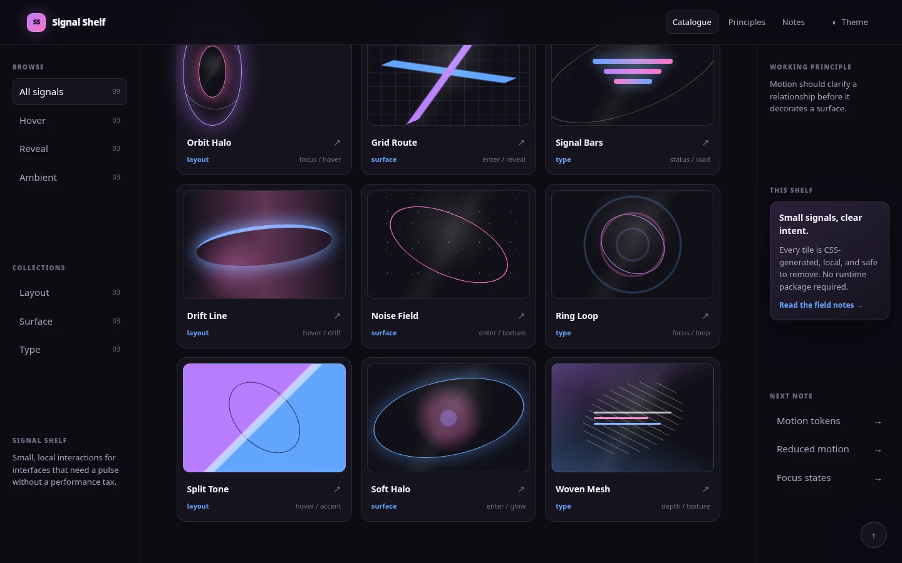
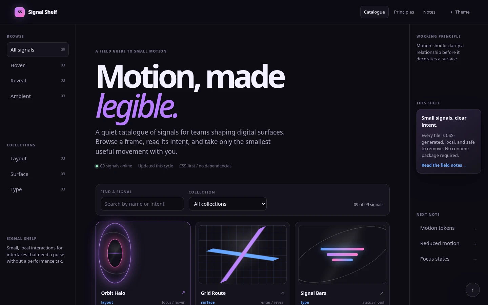
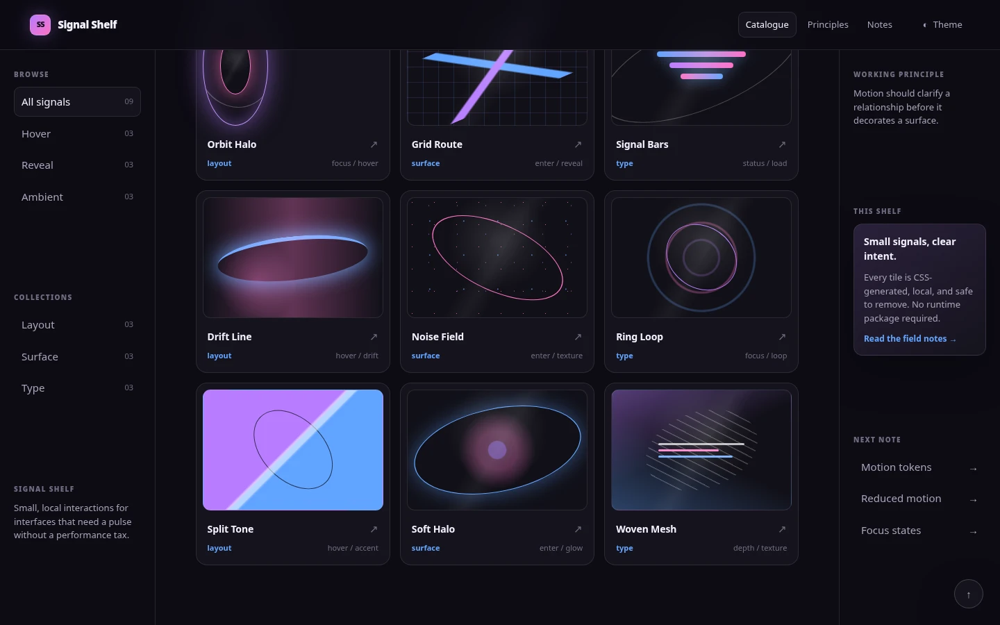
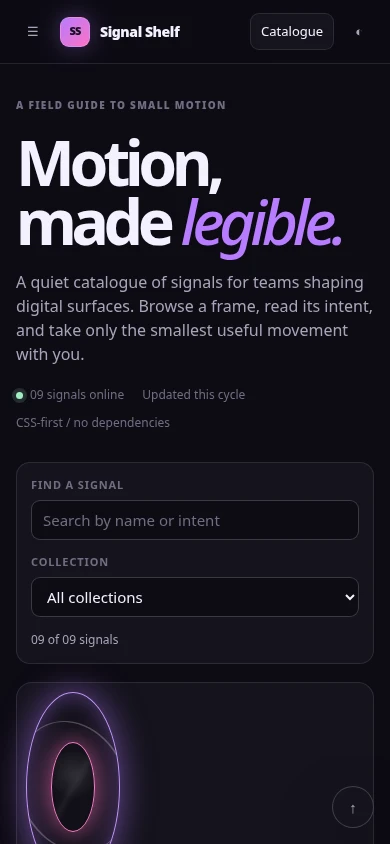
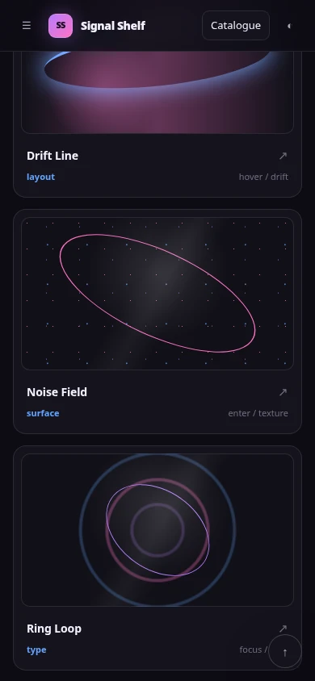
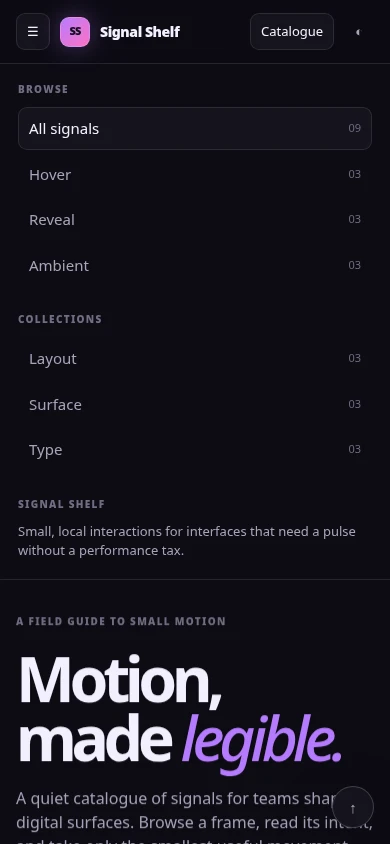

case-5300412a00 — V0 Fidelity Review Evidence
- APPROVE — accept V0 as an internal reference study; a human FidelityReport with approval
APPROVEDwill be authored from your decision, then the case may advance toDESIGN_EVALUATED. - REVISE — specify what must change; the evidence set can be regenerated deterministically again if needed.
- REJECT — the study ends without taste learning from this reference.
1 · Reference evidence — React Bits component index
src-react-bits · registry 0.1.2 (sha 2e05e111…3072c, unchanged)REFERENCE_ABSTRACTION / COMPARISON_REFERENCE — abstract observation onlyONE_OFF_OBSERVE_ONLY — manual one-off desktop inspection, Chromium 151.0.7922.34 @1485×840, internal comparison copies ≤720px wideAll three approved reference captures:

e87ed92fcb8cde80a10afbe48b8f792a4d3f1c16a6bf79268b0960206e92b229
04d151ae629543ead16f85706ca07478b2d92768d2acef547b3b10f81082fcd8
136b715b6a1267e6d98c843456438b5a974a1ba8764df1bf4e51ddf7c2e3ea2cReference limitations (recorded at observation)
- Manual one-off desktop observation only — no automated source capture, no corpus ingestion.
- Screenshots are internal comparison evidence, not reusable assets.
- Reference mobile behavior was never captured — V0 mobile is therefore an original responsive interpretation, not reference-fidelity evidence (see §2/§3).
- Source motion timing/easing/implementation unmeasured — stills show animated gradients, glow, blur, scanline, distortion intents only (evidence confidence 0.72).
- Source DOM scale: 205 links / 16 buttons / 6 images / 9 video elements / 0 canvases / 9 visible gallery cells.
2 · V0 evidence — deterministic captures (attempt 3, corrected set)

f1f32237e22acd2320d179680d79b470c39fb6dc9b947b0b6afaa9265cc20158
31a8f8315c26c7cc6d7a47588cc71f710c11d60dada2a670894949de62c64f8f
cbfe87765aff4798a97db55df5f495b4325ee6d76b044af9969d955a8db8f8e9 — spec unchanged per your instruction
7cf0d86a6b660bffa8eac8461f0eeaa68e0f1e7207bb57a21affce104042e697 · genuinely distinct from initial (sha + pHash)
3329b2f5dfd411f42e33c7f13ee348b38453ef772a32665a6996c0df109d776d
4ddff73c103393f8f7fb4d6e28d80422337428d3390599f288c821f4b2f83e78
da52049b416542d54e010624d6cd4dd8e62aa0c8bf490bbb06937657aa712390f1f32237e22acd2320d179680d79b470c39fb6dc9b947b0b6afaa9265cc20158 — identical to initial by design: the reduced-motion resting state at scroll-top renders the same pixels as the motion-enabled initial state#notes (the right rail), which never leaves the initial viewport — the capture was byte-identical to “initial”. The corrected spec scrolls deterministically to the true page bottom: scroll_to_px: 657 (= scrollHeight 1557 − viewport 900, verified live: scrollY 657/657, last card “Woven Mesh” settled and in view, back-top control visible, hero out of view). The corrected capture is distinct from initial by both sha256 and pHash — unique hashes went 6 → 7./workspace container that no longer exists; its manifest embedded that dead path and its artifacts could no longer be re-validated from the host. This revision regenerated the complete deterministic capture set from the byte-identical candidate (build sha256 bcd31a9a… unchanged) on the current host environment (Playwright 1.62.1 / Chromium 151.0.7922.34). All 8 specs, all identities, and all hashes in this dossier are from the regenerated manifest cm-fb903037…, which passes full integrity validation. The capture plan and candidate were NOT modified except the one corrected final-state scroll target.3 · Side-by-side comparison — reference vs V0
Desktop initial — browse shell
Desktop mid-scroll — catalogue pacing
Desktop end-of-list — now comparable
Mobile — V0 only · technical evidence, NOT reference fidelity
4 · Technical evidence — all machine-verified
| Gate | Producer | Result | Key checks |
|---|---|---|---|
| technical | objective | PASS | 11 kinetic elements · 1 h1 · 0 broken images · 0 empty hrefs |
| responsive (desktop 1440) | objective | PASS | no horizontal overflow · 0 escaping elements · 0 clipped text · 0 interaction blockers |
| responsive (mobile 390) | objective | PASS | no overflow · 0 escaping · 0 clipped · 0 blockers |
| accessibility | heuristic | PASS | lang present · 29 interactive, 0 unlabeled · 0 positive tabindex · focus-visible styles |
| performance | heuristic | PASS | 217 DOM nodes · 0 will-change · 0 running animations · 0 iframes · 0 large images · no continuous RAF |
| motion-token validation | objective | PASS | 0 findings · 0 exceptions · all durations/easings/distances/opacities token-derived |
| reduced-motion (source) | objective | PASS | required=true · found=true · animation/transition none · transforms none · scroll-behavior auto |
| reduced-motion (live browser) | objective | PASS | both scrollIntoView calls → auto; card/preview/arrow/back-top computed transform none under reduce |
| capture manifest integrity | objective | PASS | 8/8 entries READY · 0 failures · attempt 3 bound · build sha bound · 7 unique hashes |
| end-of-list capture check | objective | PASS | final ≠ initial (sha + pHash distinct) · scrollY 657/657 verified · last card + back-top visible |
| design / aesthetic | not-evaluated | PENDING HUMAN | “aesthetic validation requires vision-capable review or human review” (Amendment G) |
Identity & integrity hashes
| Artifact | sha256 |
|---|---|
| V0 build (variants/v0/index.html) | bcd31a9a18ab653974570a7f2fca0265dc82fe324aa3fcae563ec2c075564e0d — unchanged by the revision |
| Capture manifest (corrected) | cm-fb903037d229da2e9e7f5bc199dbc5db · 2026-09-03 · all specs/entries attempt 3 |
| Desktop final capture (corrected) | 7cf0d86a6b660bffa8eac8461f0eeaa68e0f1e7207bb57a21affce104042e697 |
| DesignCase (corpus) | c5bb6e67edb4e76a88a39814f8a66d0b91f750428b3a45fc6de71a7d05ff15f8 (bound in retrieval receipt index_hashes) |
| Registry (protected) | 2e05e111be67230c1f26524368ad7bcb298a4bd483f39f4d6dbf8c56d443072c — unchanged |
| Wanaka decision (protected) | e33c9a28c3c1786e614b571424f16d2b1d122d4b1a1b6577b01174a564fb5fd2 — unchanged |
5 · Fidelity observations — engine-recorded facts only
| Dimension | Reference (recorded observation) | V0 (recorded implementation) | Your judgment |
|---|---|---|---|
| layout | 3-zone shell: top bar, left nav rail, central gallery, right support rail; long regular list (205 links) | same 3-zone grammar at original scale: 224px/1fr/232px grid, 9-card shelf, 3 columns | REQUIRED |
| typography | bold display heading; compact sans steps for nav/titles/labels; muted metadata | fluid clamp display (48→94px, −0.085em tracking, italic accent), original open system stack, 10px uppercase rail labels | REQUIRED |
| color | near-black/charcoal shell; violet/magenta/electric-blue gradients concentrated in previews & primary actions | same tonal logic with original values: charcoal panels, gradients localized to signal motifs and accents | REQUIRED |
| spacing | even gutters, rounded panels, browse-first rhythm | clamp-based main padding, 14px grid gaps, 16px card radii, regularized rhythm | REQUIRED |
| asset_treatment | live component demos: video elements (9), images, animated previews — proprietary, not reproducible | original pure-CSS signal motifs (orbit, grid, bars, wave, noise, rings, duotone, halo, mesh); 0 external assets | REQUIRED |
| depth | layered panels with glow/blur in previews | panel separation, shallow token-derived hover lift, inset focus ring, z-levels; no WebGL/3D | REQUIRED |
| hierarchy | heading → controls → previews → metadata; central field dominant | hero (eyebrow/display/copy/meta) → toolbar (search/category/count) → shelf → card metadata | REQUIRED |
| motion | animated gradients, glow, blur, scanline, distortion visible in previews (timing unmeasured) | one tokenized hover/focus constellation per tile + one-time section reveals; 0 ambient loops (animations_running: 0) | REQUIRED |
| scroll_choreography | initial → mid-list bands → end-of-list + return affordance (all captured) | initial, mid-scroll, and genuine end-of-list all captured (corrected); no conventional footer | REQUIRED |
| interaction | search, category filtering, theme/preferences, card focus states | search + select + rail filters + result count, theme toggle, menu toggle, back-top with focus return — all 29 controls labeled | REQUIRED |
| transition_behavior | observed as intent only; unclaimed timing | duration-slow/expo for preview reveal, duration-med/quint for filters, page/1200ms reveals — all token-bound, 0 raw values | REQUIRED |
| narrative_pacing | browse-first documentation/gallery; regular card bands | same browse-first pacing at 1/20th the catalogue size (9 cards vs ~100+ components) | REQUIRED |
What V0 reproduces successfully (structural, machine-attestable)
- Three-zone dark browse shell with central catalogue dominance.
- Stable repeated preview-card grammar carrying varied original content.
- Gradient saturation localized to previews/accents, not the whole shell.
- Explicit browse affordances: search, filtering, active nav state, focus-visible styles.
- No conventional full-width footer; return-to-top control instead — now evidenced at the true bottom state.
- Full reduced-motion alternative (all motion off, scroll auto, content at resting state).
Intentionally abstracted (rights boundary — by design, not omission)
- No source component code, demo media, videos, fonts, branding, copy, or exact geometry.
- Live animated component demos replaced by static-then-hover CSS motifs.
- Original palette values and open font stacks instead of source styling.
- V0 mobile design is an original responsive interpretation (no reference mobile data exists).
Remaining weaknesses vs the reference (disclosed for your judgment)
- Catalogue scale: 9 cards vs a 200+ link index — density and endless-browse feel are reduced.
- Preview life: source previews animate persistently; V0 previews are static until hover/focus (deliberate cost/performance choice).
- Signature interaction magnitude: token-bounded ≈4px lift + ≈1.02 scale — legible but modest (interaction design unchanged per your instruction).
TECHNICALLY VERIFIED ✅
Responsive (desktop+mobile) · accessibility heuristics · performance · motion-token compliance (0 raw values) ·
reduced-motion behavior (source-scan + live browser) · capture determinism (8/8, 0 failures, attempt/build-bound, 7 unique hashes,
corrected end-of-list) · provenance & rights (registry-bound receipt, abstract-only usage) · protected history unchanged ·
original evidence basis committed at a4eda5a.
HUMAN VISUAL JUDGMENT REQUIRED ⚠
Everything in §5’s right column: whether the browse grammar, hierarchy, pacing, preview treatments, and signature interaction feel transferred from the reference at the now-complete desktop states — and whether the remaining disclosed gaps (catalogue scale, preview life, subtle signature state, mobile being interpretation-only) are acceptable for an INTERNAL_REFERENCE_STUDY. The engine cannot and did not evaluate aesthetics (Amendment G).